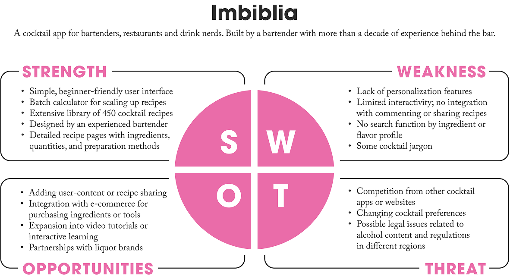
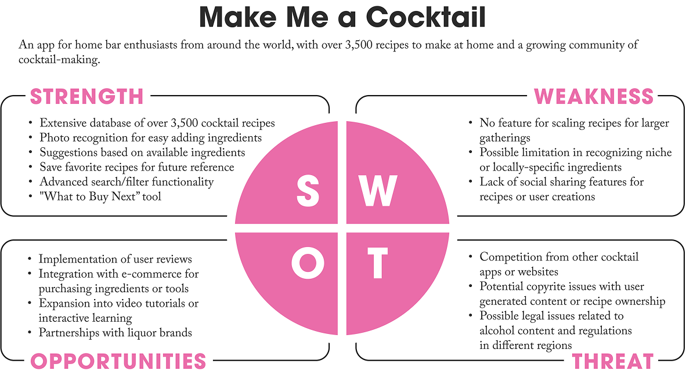
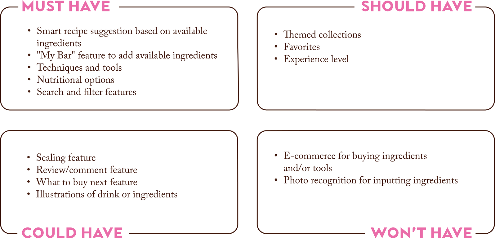
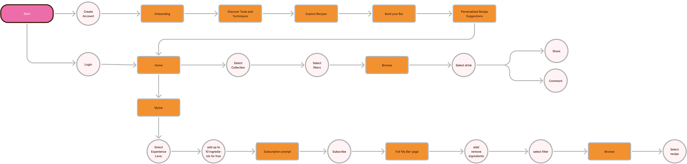
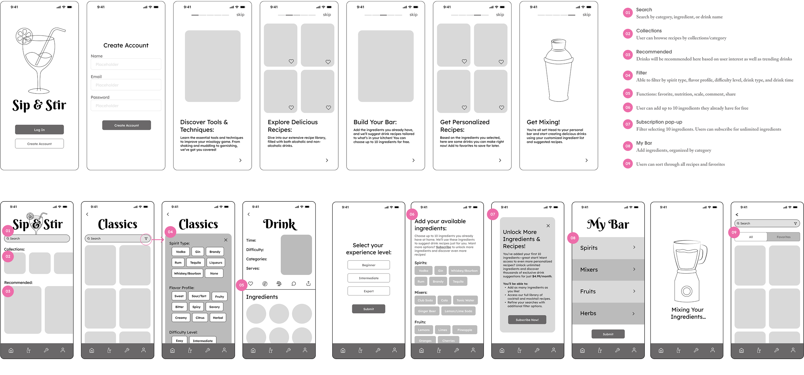
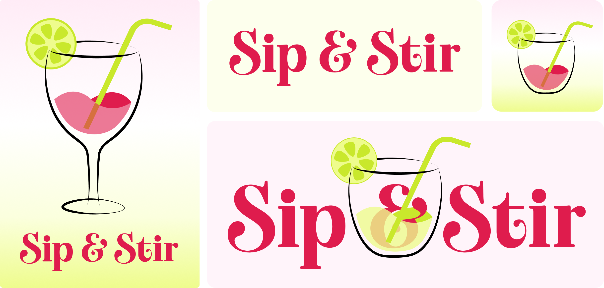
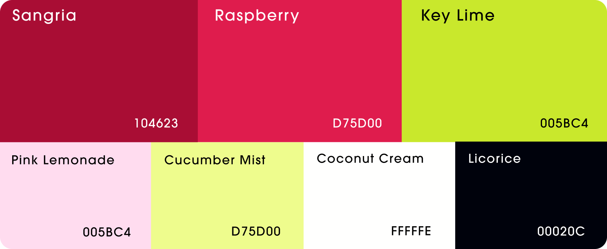
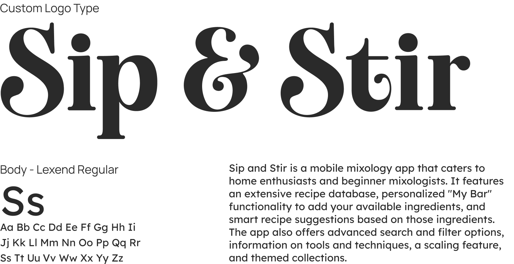
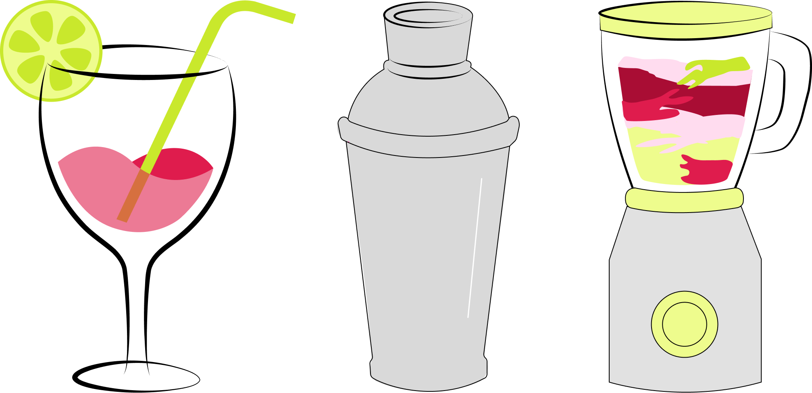
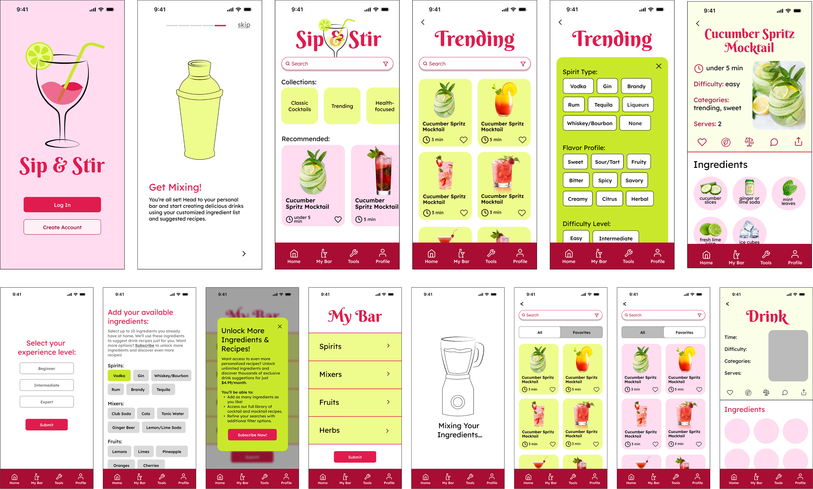

& Web Designer • Illustrator
Sip & Stir
Services
UX/UI Design, Mobile Design
Role
Researcher, UX/UI Designer,
Brand Designer, Illustrator
Overview
Sip and Stir is a mixology app featuring an extensive recipe database, personalized "My Bar" functionality for tracking available ingredients, smart recipe suggestions based on what users have on hand, and comprehensive guides covering mixology tools and techniques. The platform caters to a diverse audience, including home enthusiasts, health-conscious individuals, beginner mixologists, and those who prefer non-alcoholic beverages.
Challenge
The primary challenge was creating an intuitive and engaging platform that could effectively organize and present diverse drink recipes, accommodate ingredient-based discovery, and provide accessible guidance for users of all skill levels. The solution needed to be visually compelling, technically feasible, and capable of handling complex filtering and navigation requirements.
Research and Analysis
The research phase involved conducting competitive analysis of leading mixology apps and performing user interviews to identify pain points. Competitive analysis revealed gaps in ingredient-based search, personalization, and social features. User interviews highlighted the need for easy recipe discovery, ingredient ratio guidance, and health-conscious options.
Competitive Analysis
Imbiblia offered a simple, beginner-friendly interface with a batch calculator and over 450 recipes designed by an experienced bartender, but lacked ingredient search, personalization, and social features. Make Me a Cocktail provided an extensive database and innovative features, but was missing scaling, video tutorials, and social sharing capabilities.
User Interviews
Interviews with target users revealed struggles with ingredient ratios, difficulty finding suitable recipes, and interest in features like explore pages, ingredient-based suggestions, and nutritional information.


User Personas
Two primary personas were developed: social enthusiasts seeking creative, health-conscious drink options; busy professionals needing quick, family-friendly solutions; and aspiring mixologists looking to build confidence through accessible guidance and ingredient-based recommendations.


Ideation and Concept Development
MoSCoW prioritization identified must-have features that directly addressed user pain points. A sitemap was developed to strategically organize the app and solve the core challenges identified in user research.
MoSCoW Prioritization
Smart recipe suggestions, "My Bar" for ingredient tracking, and tools and technique guides were prioritized to address core needs. The information architecture included a home page with recommendations and search, a comprehensive Techniques and Tools section, "My Bar" for ingredient management, a profile section with favorites, and organized collections for efficient discovery.

User Flow
A user flow was created to show how new users would navigate from onboarding through to discovering personalized recipes, using ingredient inventory and advanced filters for seamless discovery.

Low-Fidelity Prototyping
Low-fidelity wireframes validated the core features that directly addressed the pain points uncovered in user research, focusing on helping users confidently create drinks with available ingredients regardless of skill level.

Visual Identity
The visual identity of Sip and Stir creates a fun and approachable mixology experience through vibrant colors inspired by cocktail ingredients and sophisticated yet readable typography. The brand identity features a custom typeface and cocktail illustration, reflecting a fun and approachable mixology experience that welcomes users of all skill levels.
Logo System
The brand identity features a custom typeface that is both whimsical and sophisticated, complemented by a cocktail illustration, reflecting a fun and approachable mixology experience that welcomes users of all skill levels.

Color Palette
Inspired by cocktail ingredients, a vibrant color palette was developed to create visual energy and appeal. Bright reds and lime green evoke the colorful, creative nature of mixology.

Typography
The typography system uses a custom typeface exclusively for the logo to establish brand identity, paired with a clean sans serif for both headings and body text to ensure readability and consistency across all screens.

Illustrations and Visual System
Custom illustrations of cocktail equipment enhance visual guidance and make the interface more engaging and approachable for users learning new techniques.

Iterative Prototyping and User Testing
Through iterative prototyping and user testing, the app's design and functionality were refined based on direct user feedback. Visual hierarchy, interface simplicity, and feature prioritization were improved to create a more intuitive and accessible experience.

Final Prototype
The final prototype delivers an intuitive ingredient-based discovery system that transforms how users approach drink-making. "My Bar" and smart recipe suggestions eliminate guesswork, while advanced filtering, comprehensive technique guides, and curated collections provide multiple pathways for exploration and skill development.
Collections and Discovery
Curated themed collections including Classic Cocktails, Trending drinks, Health-focused options, Seasonal selections, and Mocktails make exploration intuitive and engaging.
Smart Recipe Suggestions
Users can add their available ingredients to "My Bar" and receive personalized recipe recommendations, eliminating guesswork.
Onboarding
A streamlined onboarding experience introduces new users to the app's core features through five key steps: discovering essential mixology tools and techniques, exploring the recipe library, building their bar, receiving personalized recipe suggestions, and saving favorites.
Advanced Filtering
Multi-layered filtering enables users to narrow down recipes by spirit type, flavor profile, difficulty level, drink type, and timing.
Freemium Model
Core functionality is free, with premium subscribers gaining unlimited ingredient tracking and access to exclusive recipes.
Social Sharing and Community
Users can share favorite recipes to social media and engage with the community through in-app commenting.
Recipe Scaling
The scaling feature allows users to adjust serving sizes, automatically updating ingredient quantities.
Reflection and Impact
This project reinforced the importance of user-centered design in solving real problems. Iterative testing taught that simplicity often requires multiple rounds of refinement, and thoughtful feature prioritization and a well-designed freemium model can balance user accessibility with business sustainability.